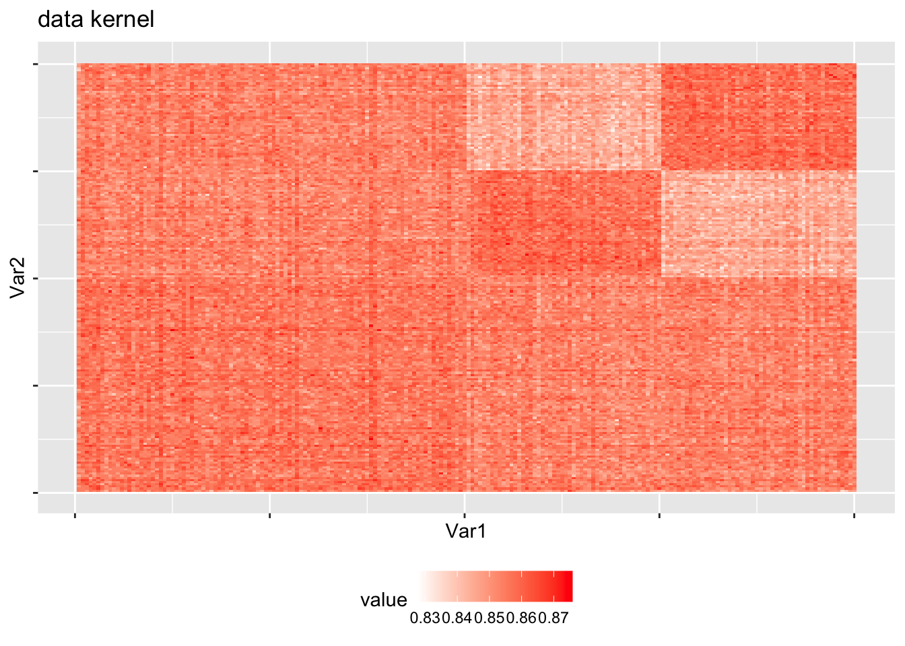
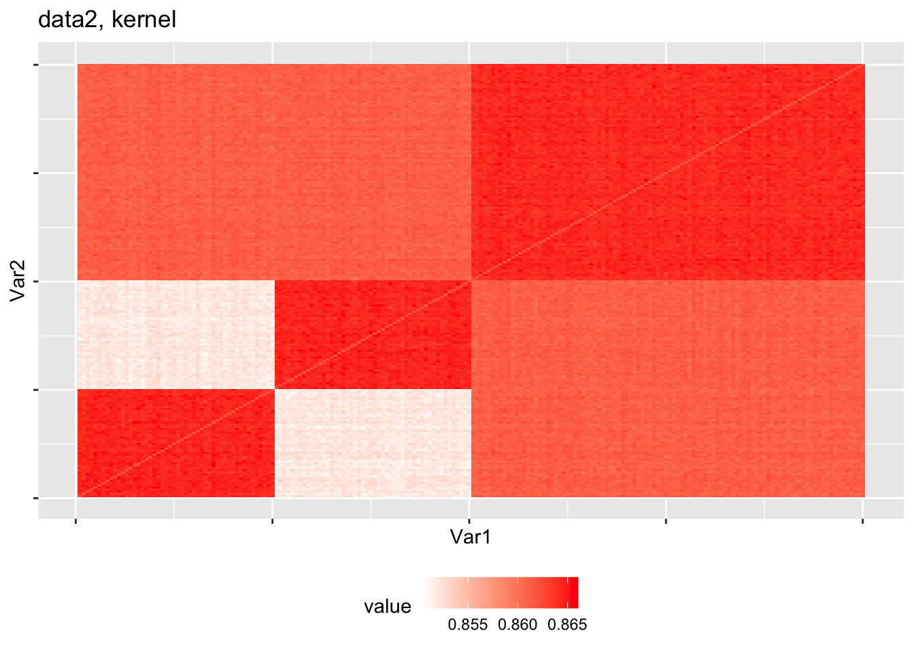
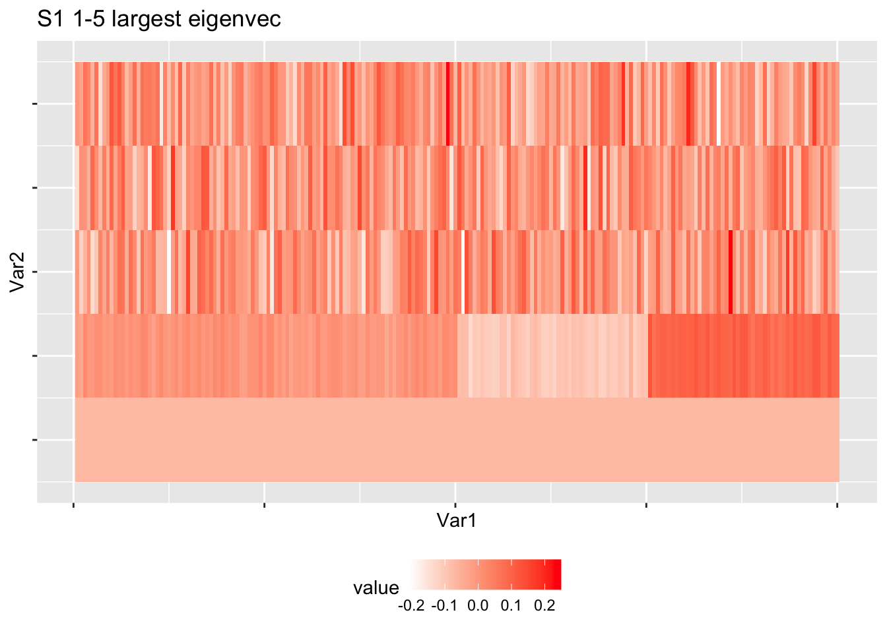
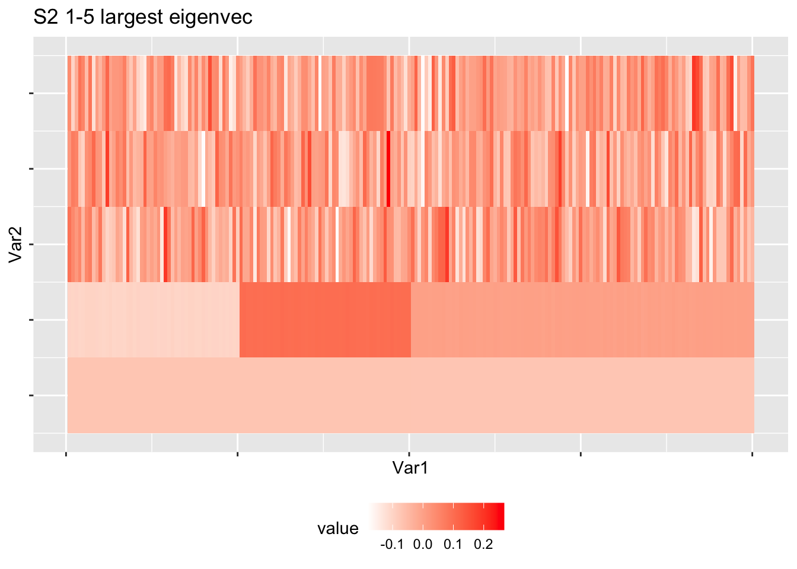
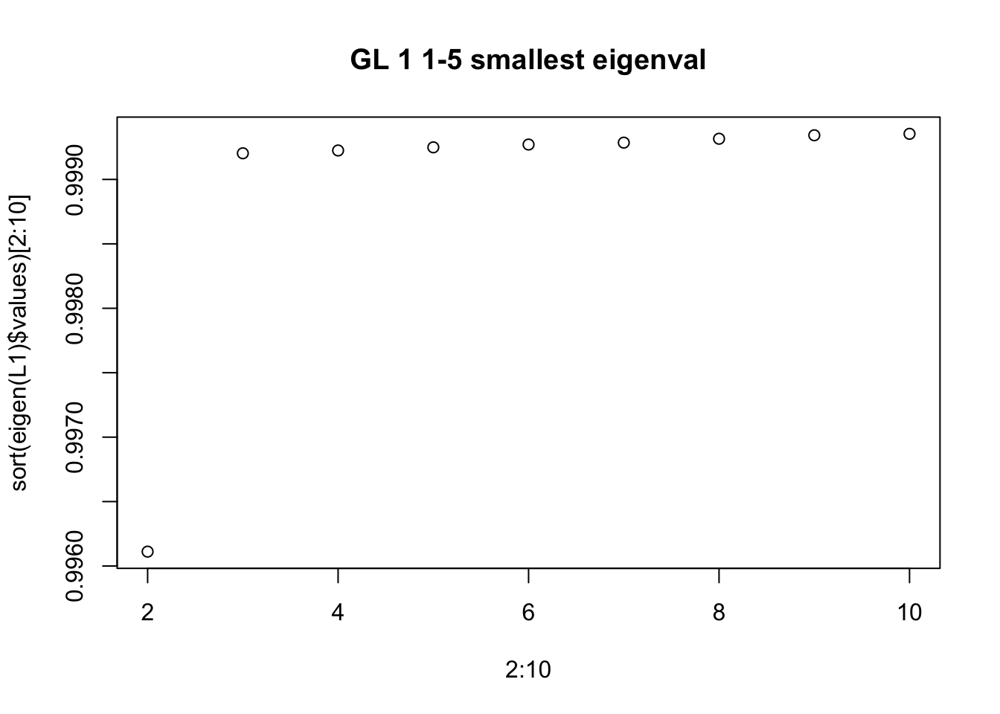
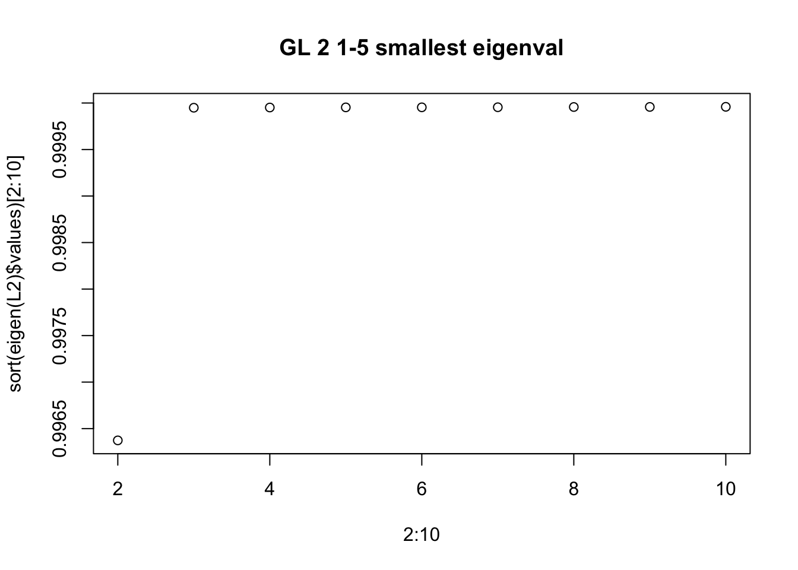
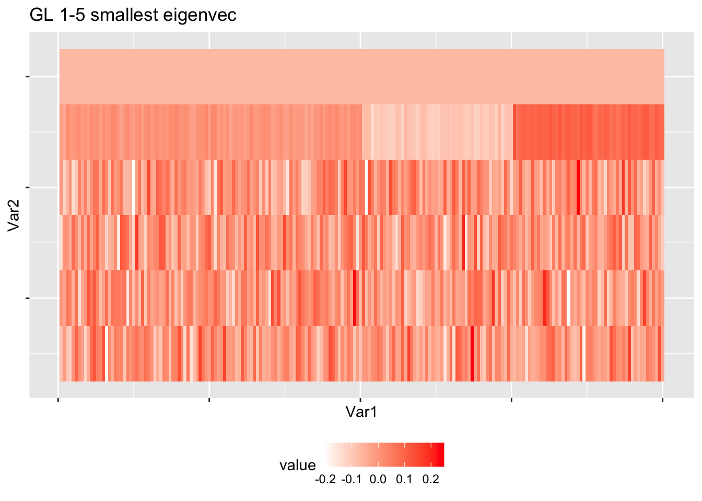
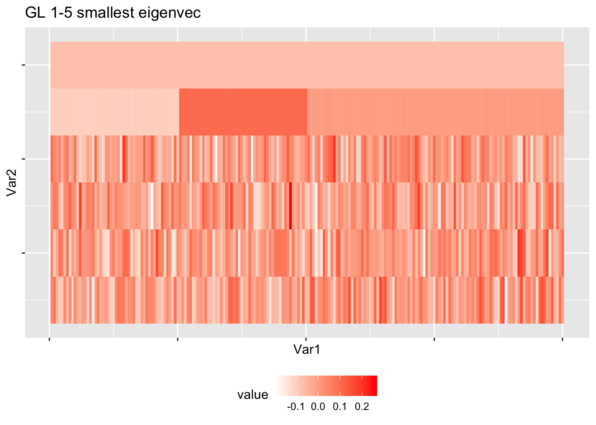
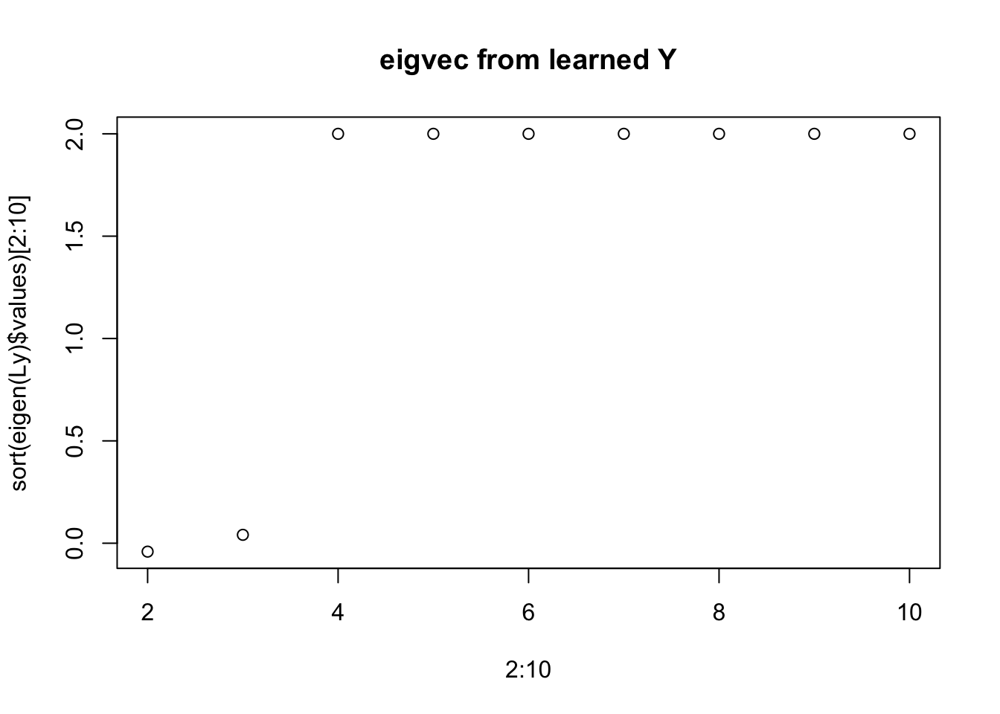
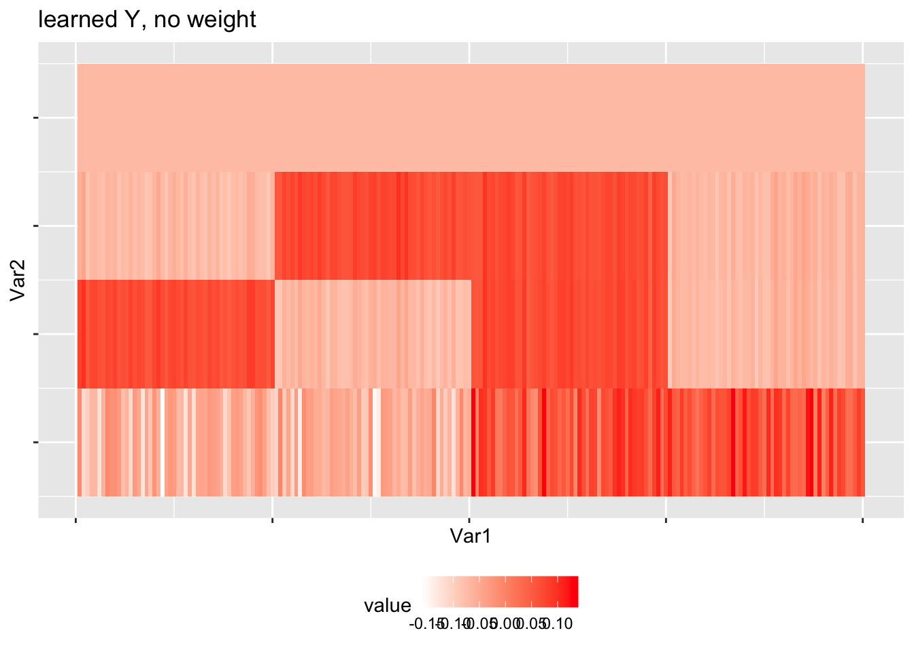

Last updated: 2022-10-06
Checks: 7 0
Knit directory: DEP_SIMLR/
This reproducible R Markdown analysis was created with workflowr (version 1.6.2). The Checks tab describes the reproducibility checks that were applied when the results were created. The Past versions tab lists the development history.
Great! Since the R Markdown file has been committed to the Git repository, you know the exact version of the code that produced these results.
Great job! The global environment was empty. Objects defined in the global environment can affect the analysis in your R Markdown file in unknown ways. For reproduciblity it’s best to always run the code in an empty environment.
The command set.seed(20221003) was run prior to running the code in the R Markdown file. Setting a seed ensures that any results that rely on randomness, e.g. subsampling or permutations, are reproducible.
Great job! Recording the operating system, R version, and package versions is critical for reproducibility.
Nice! There were no cached chunks for this analysis, so you can be confident that you successfully produced the results during this run.
Great job! Using relative paths to the files within your workflowr project makes it easier to run your code on other machines.
Great! You are using Git for version control. Tracking code development and connecting the code version to the results is critical for reproducibility.
The results in this page were generated with repository version 5e867c8. See the Past versions tab to see a history of the changes made to the R Markdown and HTML files.
Note that you need to be careful to ensure that all relevant files for the analysis have been committed to Git prior to generating the results (you can use wflow_publish or wflow_git_commit). workflowr only checks the R Markdown file, but you know if there are other scripts or data files that it depends on. Below is the status of the Git repository when the results were generated:
Ignored files:
Ignored: .Rhistory
Ignored: .Rproj.user/
Unstaged changes:
Modified: code/functions/Partition_CIMLR_2.0.R
Modified: code/simu_220930_analysis.R
Note that any generated files, e.g. HTML, png, CSS, etc., are not included in this status report because it is ok for generated content to have uncommitted changes.
These are the previous versions of the repository in which changes were made to the R Markdown (analysis/choose_eigenvec_number.rmd) and HTML (docs/choose_eigenvec_number.html) files. If you’ve configured a remote Git repository (see ?wflow_git_remote), click on the hyperlinks in the table below to view the files as they were in that past version.
| File | Version | Author | Date | Message |
|---|---|---|---|---|
| Rmd | 5e867c8 | yuqimiao | 2022-10-06 | update |
This notebook investigate the number of eigenvectors to use in DEP-SIMLR
DEP-SIMLR
Input:
Output:
Initialize
Repeat, iteration t,
Among the iteration steps, there are 2 steps used the eigenvectors to represents the graph laplacian matrix, Details can be found in Overleaf. Here we explore the performance of eigengap, argue that this should be used as a criteria to choose the number of eigenvector to use instead f=of an estimation of number of clusters in the graph when the graph is not clear
data simulation, small noise
## simulate
noise_sd = 1 # small noise
n_feat1 = 1000
n_feat2 = 100000
mu1 = c(0, 0, 1, -1)
mu2 = c(1,-1,0,0)
data1 = get_data_4clust(n_feat = n_feat1, mu_vec = mu1, noise_sd = noise_sd)
data2 = get_data_4clust(n_feat = n_feat2, mu_vec = mu2, noise_sd = noise_sd)
data_list = list(data1, data2)
## benchmark
alpha = 1
sigma = 2 # kernel_parameter
diffusion_form = "L1"
n = nrow(data_list[[1]])
k = floor(sqrt(n))
# dist, kernel
distance_list = lapply(data_list, function(x) dist2(x,x))
kernel_list = lapply(distance_list, function(x) kernel_calculation(distance = x, k = k, sigma = sigma ))single kernel eigenspace visual and cluster
# Show clear structure
S1 = kernel_list[[1]]
S2 = kernel_list[[2]]
diag(S1) = mean(S1)
diag(S2) = mean(S2)
heatmap_gg(S1,"data kernel")
heatmap_gg(S2,"data2, kernel")
# heatmap_gg(S1+S2,"kernel sum")
heatmap_gg(eigen(S1)$vectors[,1:5],"S1 1-5 largest eigenvec")
heatmap_gg(eigen(S2)$vectors[,1:5],"S2 1-5 largest eigenvec")
est_nclust(S1)[1] 2est_nclust(S2)[1] 2L1 = normalized_GL(S1)
plot(2:10, sort(eigen(L1)$values)[2:10], main = "GL 1 1-5 smallest eigenval")
L2 = normalized_GL(S2)
plot(2:10, sort(eigen(L2)$values)[2:10], main = "GL 2 1-5 smallest eigenval")
heatmap_gg(eigen(L1)$vectors[,(n-5):n],"GL 1-5 smallest eigenvec")
heatmap_gg(eigen(L2)$vectors[,(n-5):n],"GL 1-5 smallest eigenvec")
c_single = 3
compare(kmeans(eigen(L1)$vectors[,(n-c_single+1):n],3, nstart = 200)$cluster, c(rep(1,100), rep(2:3, each = 50)), "nmi")[1] 0.4348676compare(kmeans(eigen(L2)$vectors[,(n-c_single+1):n],3, nstart = 200)$cluster, c(rep(1:2, each = 50), rep(3,100)), "nmi")[1] 0.549936c_single = 2
compare(kmeans(eigen(L1)$vectors[,(n-c_single+1):n],3, nstart = 200)$cluster, c(rep(1,100), rep(2:3, each = 50)), "nmi")[1] 1compare(kmeans(eigen(L2)$vectors[,(n-c_single+1):n],3, nstart = 200)$cluster, c(rep(1:2, each = 50), rep(3,100)), "nmi")[1] 1We can see clearly, we should use the first 2 eigenvector to for 3 clusters in both data 1 and data 2
For integrated Y learn from FsFs^T, see overleaf for how we learn Y
# learned Y, no weight
c_single = c(2,2)
Fs = list(data1 = eigen(L1)$vectors[,(n-c_single[1]+1):n], data2 = eigen(L2)$vectors[,(n-c_single[2]+1):n])
Ls = lapply(Fs, function(f) diag(1,n)-f %*% t(f) *2)
Ly = Reduce("+", Ls)
c = 4
Y = eigen(Ly)$vectors[, (n-c+1):n]
plot(2:10, sort(eigen(Ly)$values)[2:10], main = "eigvec from learned Y")
heatmap_gg(Y, "learned Y, no weight")
compare(kmeans(Y, 4, nstart = 200)$cluster, rep(1:4, each = 50), "nmi")[1] 1c = 3
Y = eigen(Ly)$vectors[, (n-c+1):n]
compare(kmeans(Y, 4, nstart = 200)$cluster, rep(1:4, each = 50), "nmi")[1] 1Thus in our algorithm we estimate numbe of clusters in both step 2 and 3
How to estimate the number of vectors to use for Fs?
Fixing Z and Y, the update of Fs is
\[ F_s = arg\min_{F_s} tr(F_s^TM(Z_s,Y)F_s) \\ M(Z_s,Y) = \gamma(L_{Z_s}+\rho L_{YY^T}) \]
Explore:
sessionInfo()R version 3.6.2 (2019-12-12)
Platform: x86_64-apple-darwin15.6.0 (64-bit)
Running under: macOS 10.16
Matrix products: default
BLAS: /Library/Frameworks/R.framework/Versions/3.6/Resources/lib/libRblas.0.dylib
LAPACK: /Library/Frameworks/R.framework/Versions/3.6/Resources/lib/libRlapack.dylib
locale:
[1] en_US.UTF-8/en_US.UTF-8/en_US.UTF-8/C/en_US.UTF-8/en_US.UTF-8
attached base packages:
[1] stats graphics grDevices utils datasets methods base
other attached packages:
[1] reshape2_1.4.4 patchwork_1.0.0 plot.matrix_1.6 SNFtool_2.3.0
[5] igraph_1.2.6 forcats_0.5.0 stringr_1.4.0 dplyr_1.0.7
[9] purrr_0.3.4 readr_1.3.1 tidyr_1.1.3 tibble_3.1.3
[13] ggplot2_3.3.5 tidyverse_1.3.0 workflowr_1.6.2
loaded via a namespace (and not attached):
[1] Rcpp_1.0.8.3 lubridate_1.7.8 assertthat_0.2.1 rprojroot_2.0.2
[5] digest_0.6.27 utf8_1.2.2 plyr_1.8.6 R6_2.5.0
[9] cellranger_1.1.0 backports_1.2.1 reprex_0.3.0 evaluate_0.14
[13] highr_0.8 httr_1.4.2 pillar_1.6.2 rlang_0.4.11
[17] readxl_1.3.1 rstudioapi_0.13 whisker_0.4 rmarkdown_2.1
[21] labeling_0.4.2 munsell_0.5.0 broom_0.7.6 ExPosition_2.8.23
[25] compiler_3.6.2 httpuv_1.5.5 modelr_0.1.6 xfun_0.22
[29] pkgconfig_2.0.3 htmltools_0.5.1.1 tidyselect_1.1.1 fansi_0.5.0
[33] crayon_1.4.1 dbplyr_1.4.2 withr_2.4.2 later_1.1.0.1
[37] alluvial_0.1-2 grid_3.6.2 jsonlite_1.7.2 gtable_0.3.0
[41] lifecycle_1.0.0 DBI_1.1.0 git2r_0.26.1 magrittr_2.0.1
[45] prettyGraphs_2.1.6 scales_1.1.1 cli_3.0.1 stringi_1.5.3
[49] farver_2.1.0 fs_1.5.0 promises_1.2.0.1 heatmap.plus_1.3
[53] xml2_1.3.2 ellipsis_0.3.2 generics_0.1.0 vctrs_0.3.8
[57] tools_3.6.2 glue_1.4.2 hms_1.1.0 yaml_2.2.1
[61] colorspace_2.0-2 rvest_0.3.5 knitr_1.32 haven_2.3.1